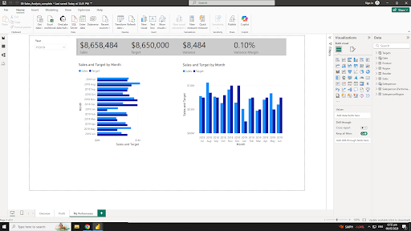

In this activity, I learned about Designing Interactive Reports in Power BI and how interactive features improve data presentation and analysis. The activity focused on creating user-friendly reports that allow users to explore and understand data easily.
Through this activity, I learned that interactive reports make data easier to understand and more effective for presenting insights.
Back to Projects Show Project